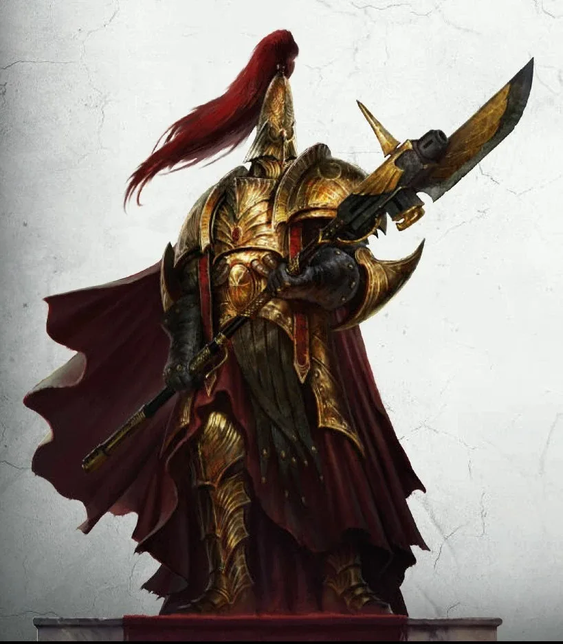
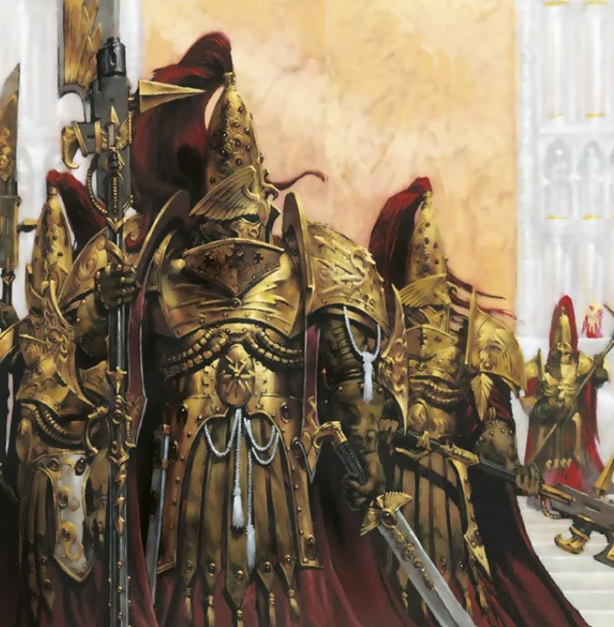
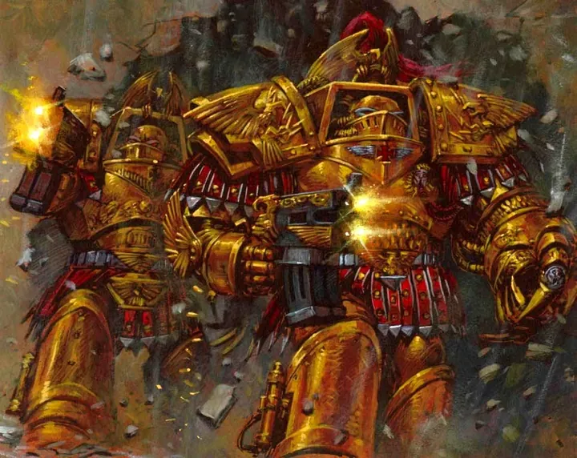
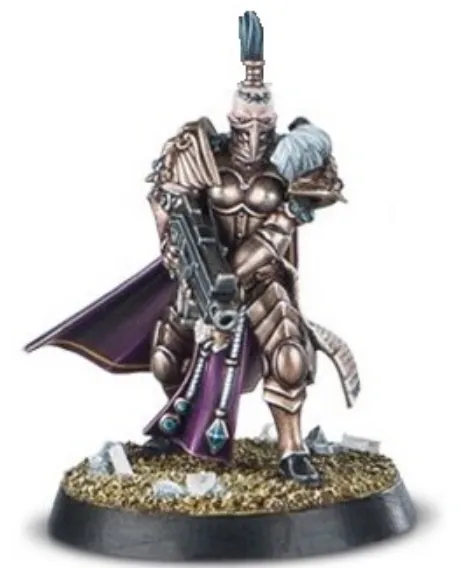
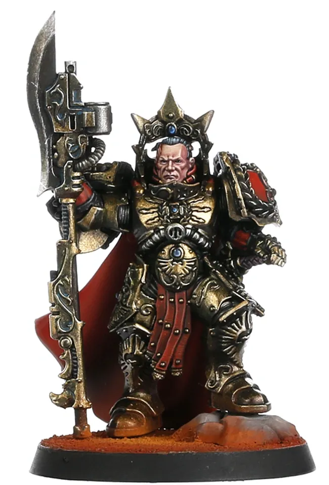
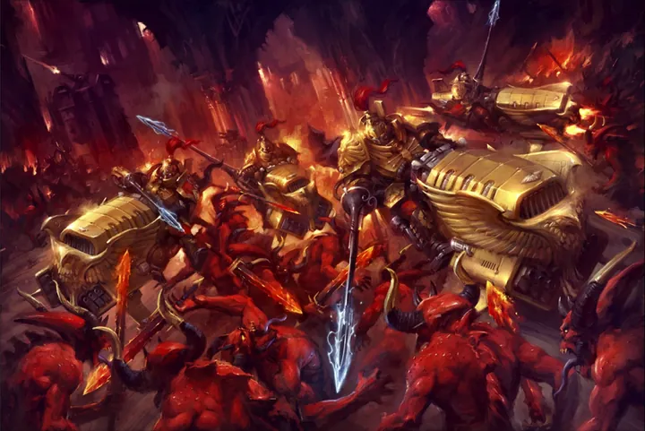
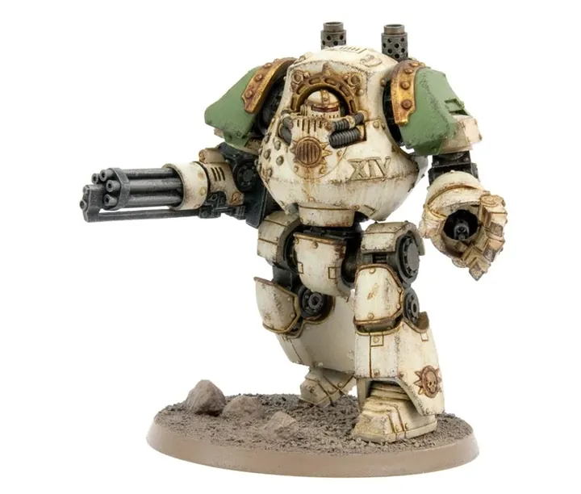
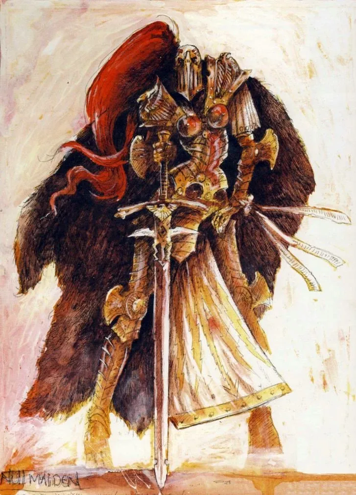

01ภาพรวม

องครักษ์ทองคำที่จักรพรรดิสร้างขึ้นเองทีละคน — แข็งแกร่งกว่า Space Marines และภักดีต่อพระองค์เท่านั้น
02ต้นกำเนิด
ถูกสร้างตั้งแต่ยุค Unification Wars เป็นเพื่อน ที่ปรึกษา และองครักษ์ของจักรพรรดิ แต่ละคนผ่านกระบวนการดัดแปลงที่ซับซ้อนกว่า Space Marines และได้ชื่อจริงยาวเหยียดที่บันทึกประวัติชีวิต
03เนื้อเรื่องเจาะลึก
องครักษ์ที่ไม่เคยออกนอก Terra
หมื่นปีหลัง Heresy Custodes แทบไม่เคยออกจากพระราชวัง เพราะหน้าที่เดียวคือปกป้องจักรพรรดิบน Golden Throne จนเมื่อ Guilliman ฟื้นคืน พวกเขาจึงเริ่มส่งกองกำลังไปทั่วกาแล็กซี
Emperor's Talons
ในยุค Horus Heresy Custodes และ Sisters of Silence ร่วมมือกันเป็น "กรงเล็บของจักรพรรดิ" ปฏิบัติภารกิจพิเศษ รวมถึงการนำ Magnus มาไต่สวน
04ยุค 30K — ในยุค Great Crusade และ Horus Heresy

ยุค 30K เรียกว่า Legio Custodes มีจำนวนไม่ถึงหมื่นนาย แทบไม่เคยออกนอก Terra ยกเว้นเมื่อจักรพรรดิสั่ง เช่น ร่วมเผา Prospero และสงครามลับในเว็บเวย์
ดูภาพรวมยุค 30K ทั้งหมดที่ เนื้อเรื่องยุค 30K และความต่างของสองยุคที่ เปรียบเทียบ 30K vs 40K
05นิสัยและวัฒนธรรม
- ใช้เวลานอกสนามรบกับศิลปะ ปรัชญา และการฝึกฝน
- แบกความรู้สึกผิดที่ปกป้องจักรพรรดิไม่ได้ในวันที่ Horus ทำร้ายพระองค์มานับหมื่นปี
- ทำงานคู่กับ Sisters of Silence
06จุดที่น่าสนใจ
- หนึ่งนายเทียบได้กับ Space Marines หลายนาย
- อาวุธประจำตัว: Guardian Spear หอกที่ยิงได้
- ชื่อของแต่ละคนยาวมากเพราะบันทึกเรื่องราวชีวิตไว้ในชื่อ
07ความสามารถพิเศษ
สิ่งที่ทำให้ Adeptus Custodes แตกต่างจากทัพอื่น — ทั้งพลังที่ติดตัวมาทั้งเผ่า/ทัพ และความสามารถของบุคคลสำคัญ
ของทั้งเผ่า/ทัพ

สร้างเป็นรายบุคคล
Custodes แต่ละคนถูกจักรพรรดิหรือผู้สืบทอดความรู้สร้างขึ้นทีละคนจากเด็กตระกูลขุนนางของ Terra ใช้กระบวนการที่ซับซ้อนกว่า Space Marine มาก แข็งแกร่งจนนักรบคนเดียวเทียบได้กับ Space Marine หลายนาย

อายุยืนหลายพันปี
Custodes บางคนมีชีวิตอยู่ตั้งแต่ยุค Great Crusade ความทรงจำและประสบการณ์หลายพันปีทำให้พวกเขาคาดการณ์การต่อสู้ได้ดีเกินมนุษย์

ชื่อยาวที่เล่าชีวิต
ทุกคนมีชื่อที่ยาวขึ้นตามวีรกรรม — Custodes มีตัวตนและความคิดสร้างสรรค์ ต่างจาก Space Marine ที่ถูกสร้างเป็นทหาร

คู่หู Sisters of Silence
Sisters of Silence เป็น "Blank" ที่ทำให้พลังจิตอ่อนแรงในรัศมีรอบตัว ร่วมกับ Custodes ล่าผู้ใช้พลังจิตอันตราย
ของบุคคลสำคัญ
Trajann Valoris
Captain-Generalผู้นำปัจจุบัน ถือขวาน Watcher's Axe และได้นั่งในสภา High Lords of Terra นำ Custodes ออกรบนอก Terra ร่วมกับ Guilliman

Constantin Valdor
Captain-General คนแรกผู้นำ Legio Custodes ยุค Great Crusade และ Heresy ถือหอก Apollonian Spear หายตัวไปอย่างลึกลับหลังสงคราม
08หน่วยและบทบาทในกองทัพ
Adeptus Custodes คือองครักษ์ส่วนพระองค์ของจักรพรรดิ แต่ละคนถูกสร้างเป็นรายบุคคล แข็งแกร่งกว่า Space Marine มาก มีจำนวนราวหลายพันคนเท่านั้น และทำงานร่วมกับ Sisters of Silence
Captain-General
กัปตัน-เจเนอรัลผู้นำสูงสุดของ Custodes ปัจจุบันคือ Trajann Valoris ผู้มีส่วนในสภา High Lords ในยุค Era Indomitus

Shield-Captain
ชิลด์-กัปตันผู้นำกองกำลัง Custodes ในสนาม มีประสบการณ์หลายร้อยปี
Custodian Guard
คัสโตเดียนการ์ดนักรบหลักของ Custodes สวมเกราะทองและถือหอก Guardian Spear (ทั้งปืนและหอก) ทุกคนมีชื่อและประวัติของตัวเอง
Allarus Terminator
อัลลารัส เทอร์มิเนเตอร์Custodes ในเกราะ Terminator ใช้สำหรับภารกิจตัดหัวผู้นำศัตรูและบุกลึก

Vertus Praetor
เวอร์ทัส พรีเตอร์Custodes ขี่ยานบิน Dawneagle Jetbike ความเร็วสูง ใช้ล่าศัตรูที่หนีหรือโจมตีจากฟ้า
Sisters of Silence
ซิสเตอร์สออฟไซเลนซ์นักรบหญิงที่เป็น "Blank" (ไร้วิญญาณพลังจิต) ทำให้ผู้ใช้พลังจิตอ่อนแอ สาบานไม่พูด ใช้ภาษามือ เป็นคู่หูของ Custodes ในการล่าแม่มด

Venerable Contemptor
คอนเทมป์เตอร์อาวุโสDreadnought ของ Custodes สำหรับนักรบที่บาดเจ็บปางตาย — ยังคงรับใช้จักรพรรดิต่อไปในร่างเหล็ก
09วีรกรรมและเหตุการณ์สำคัญ
Unification Wars
รบเคียงข้างจักรพรรดิรวม Terra เป็นหนึ่ง
Burning of Prospero
ร่วมกับ Space Wolves และ Sisters of Silence บุก Prospero
Siege of Terra
ป้องกันพระราชวังจนวาระสุดท้ายของ Heresy
Battle of Lion's Gate
Trajann Valoris นำการป้องกันพระราชวังจากปีศาจของ Khorne
10ตัวละครสำคัญ
Trajann Valoris
Captain-Generalผู้นำคนปัจจุบัน นำการป้องกันพระราชวังจากปีศาจของ Khorne
11ยุค 40K — สหัสวรรษที่ 41
ตลอดหมื่นปี Custodes แทบไม่ออกจากพระราชวัง เว้นแต่เรื่องร้ายแรงที่สุด
12เนื้อเรื่องล่าสุด (Era Indomitus / M42)
หลังกิลลิมันฟื้นคืนชีพ Custodes ออกเดินทางไปทั่วกาแล็กซีเพื่อชดใช้ความผิดพลาดในอดีต และร่วมรบใน Indomitus Crusade
หลังการเกิด Great Rift ปฏิทินของจักรวรรดิคลาดเคลื่อน เหตุการณ์ยุคปัจจุบันจึงมักระบุเพียง 'M42' ไม่มีปีที่แน่นอน
13แกลเลอรี
